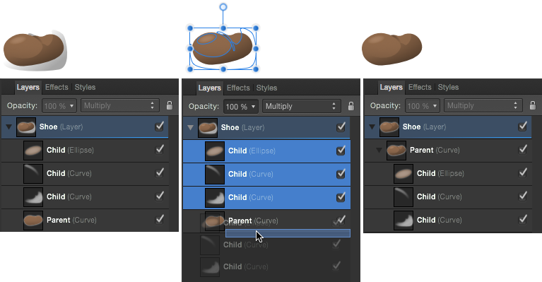

Обрезка предполагает размещение одного объекта внутри другого. Контур родительского объекта становится новыми границами дочернего объекта. Любые участки дочернего объекта, выходящие за пределы контура родительского объекта, маскируются (скрываются).
Три верхние фигуры обрезаются по контуру находящейся ниже фигуры, что приводит к ее затенению. 
Панель «Слои»: процедура обрезки с использованием родительских и дочерних объектов.
Об обрезке
При масштабировании родительского объекта дочерний (обрезанный) объект масштабируется так, чтобы сохранилось правильное соотношение сторон. Масштабирование обрезанного объекта не влияет на родительский объект. Обрезанный объект можно редактировать вне зависимости от родительского, например менять цвет, уровень непрозрачности и (или) режим наложения.
При выполнении обрезки любой объект может выступать в качестве родительского или дочернего. Поэтому любые векторные или пиксельные объекты могут быть обрезаны или служить образцами для обрезки.
Для того чтобы обрезать объекты, выполните перечисленные далее действия.
На странице разместите объект, который должен быть обрезан, таким образом, чтобы он перекрывал объект, по контуру которого будет выполняться обрезка.
На панели Слои перетащите объект, который необходимо обрезать, и разместите его над объектом, по контуру которого будет выполняться обрезка.
Обрезанный объект на панели «Слои» будет вложен в объект, по контуру которого выполнялась обрезка. Он станет дочерним по отношению к объекту, по которому выполнялась обрезка.
Для того чтобы выделить обрезанные объекты, выполните перечисленные далее действия.
На панели Слои разверните содержимое объекта, по контуру которого выполняется обрезка (при необходимости), нажав стрелку слоя.
Для выделения обрезанного объекта нажмите его.
При необходимости обрезанный объект можно перемещать и редактировать.
Для отмены обрезки объекта выполните перечисленные далее действия.
На панели Слои перетащите обрезанный объект за пределы родительского объекта на слой.